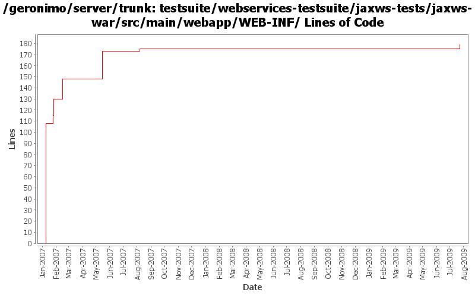

[root]/testsuite/webservices-testsuite/jaxws-tests/jaxws-war/src/main/webapp/WEB-INF
 wsdl
(2 files, 221 lines)
wsdl
(2 files, 221 lines)

| Author | Changes | Lines of Code | Lines per Change |
|---|---|---|---|
| Totals | 24 (100.0%) | 224 (100.0%) | 9.3 |
| prasad | 3 (12.5%) | 108 (48.2%) | 36.0 |
| gawor | 9 (37.5%) | 46 (20.5%) | 5.1 |
| dims | 5 (20.8%) | 39 (17.4%) | 7.8 |
| djencks | 3 (12.5%) | 16 (7.1%) | 5.3 |
| kevan | 1 (4.2%) | 12 (5.4%) | 12.0 |
| jdillon | 3 (12.5%) | 3 (1.3%) | 1.0 |
undo accidental change
0 lines of code changed in 1 file:
resources -> filtered-resources
4 lines of code changed in 1 file:
Fix old-style source license headers to use the current source license header format
12 lines of code changed in 1 file:
since service-ref is built with a wsdl, connect to the service that's built with the same wsdl
1 lines of code changed in 1 file:
set a fixed context root for jaxws tests
3 lines of code changed in 1 file:
fix service address
1 lines of code changed in 1 file:
just changed names to distinguish between handlers
2 lines of code changed in 1 file:
improved tests to test wsdl/schema file publishing. deploy the same service with wsdl and without.
35 lines of code changed in 3 files:
Std props
3 lines of code changed in 3 files:
Fix for GERONIMO-2825 - CXF and spring version update
Fix for GERONIMO-2826 - Test case to test invocations using service-ref
Fix for GERONIMO-2830 - Updated dependencies for ejb-based tests
Fix for GERONIMO-2836 - Improvements for CXF integration
Fix for GERONIMO-2840 - Minor fixes
18 lines of code changed in 2 files:
Make the test case reflect the wsdl being used by adding other methods mentioned in the wsdl. added a xjc task in the pom.xml to generate the types needed for the fault. Ran the existing tests with both axis2 and cxf. Need to add more tests for the newly added methods.
4 lines of code changed in 2 files:
Fix for GERONIMO-2781 - Improved CXF-based POJO WebService support
17 lines of code changed in 1 file:
GERONIMO-2762 Update jax-ws tests, improve CXFWebServiceContainerFactoryGBean, thanks jarek
16 lines of code changed in 3 files:
* moved itests/cxfPojoWS/war to webservices-testsuite/jaxws/jaxws-war
108 lines of code changed in 3 files: